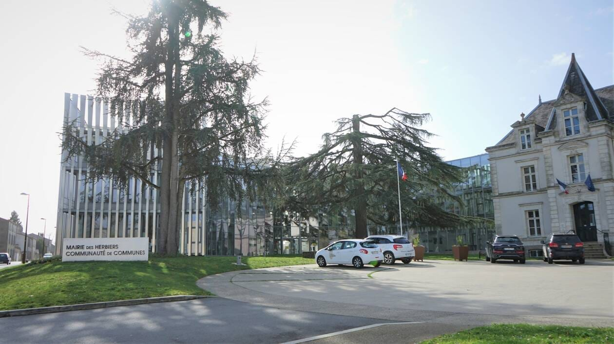
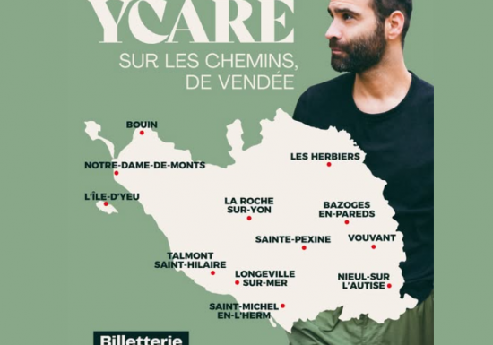
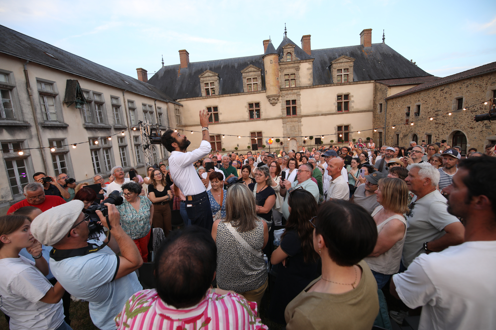

-présentation personnel, pôles éditions/digital/graphisme.
-Approche diff papier/en ligne en fonction date lecture, info à jour. réfléchir à la date de lecture
-Journal mensuel sauf été (juillet/aout).
-Relecture journal innombrables fois. Tjrs détails à peaufiner.
-Journal doit être validé par le Maire.
-Bcp de photos pour très peu retenues.
-hésitation=changement de titre

-sur le terrain pour avoir Ycare, artiste qui traverse la Vendée à pied et qui donne des concerts sur son chemin.
-Loupé au mont des Alouettes, mais photo avec le Maire par prsn ext
-Sur le chemin de la descente, photos et plans filmés, pas donnés
-Arrivé à l’Etenduère, mais s’arrête sur parking de Jean XXIII. Quelques photos mais pas satisfait du décor, savoir se contenter mais frustration.
-Beaucoup de monde, cortège qui paraissait très à l’aise avec le chanteur. Voir photo ig
-retenir pression et course pr avoir l’artiste
-Quand contact avec homologues du métier, être avenant pour obtenir conseil et aide, s’aider
Polémique autour du cadre, choix des sites crucial en photo
